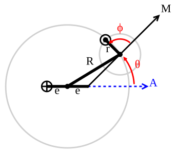

|
Observation of Jupiter dates back to at least the Babylonian astronomers of the 7th or 8th century BC.
The ancient Chinese knew Jupiter as the "Suì Star" (Suìxīng 歲星) and established their cycle of 12 earthly
branches based on the approximate number of years it takes Jupiter to rotate around the Sun; the Chinese language
still uses its name (simplified as 歲) when referring to years of age. By the 4th century BC, these observations had
developed into the Chinese zodiac, and each year became associated with a Tai Sui star and god controlling the region
of the heavens opposite Jupiter's position in the night sky.
These beliefs survive in some Taoist religious practices
and in the East Asian zodiac's twelve animals. The Chinese historian Xi Zezong has claimed that Gan De, an ancient
Chinese astronomer, reported a small star "in alliance" with the planet, which may indicate a sighting of one of Jupiter's
moons with the unaided eye. If true, this would predate Galileo's discovery by nearly two millennia.
A 2016 paper reports that trapezoidal rule was used by Babylonians before 50 BC for integrating the velocity of Jupiter along
the ecliptic. In his 2nd century work the Almagest, the Hellenistic astronomer Claudius Ptolemaeus constructed a geocentric planetary
model based on deferents and epicycles to explain Jupiter's motion relative to Earth, giving its orbital period around Earth as 4332.38 days,
or 11.86 years.
|
|
|
|
|
|
|
|

A 2012 artistic impression of the early Solar System's protoplanetary disk from which Earth
and other Solar System bodies were formed
|
jupiter is believed to be the oldest planet in the Solar System, having formed just one million years after the Sun and roughly 50 million years before Earth.
Current models of Solar System formation suggest that Jupiter formed at or beyond the snow line: a distance from the early Sun where the temperature was
sufficiently cold for volatiles such as water to condense into solids. The planet began as a solid core, which then accumulated its gaseous atmosphere. As
a consequence, the planet must have formed before the solar nebula was fully dispersed. During its formation, Jupiter's mass gradually increased until it had
20 times the mass of the Earth, approximately half of which was made up of silicates, ices and other heavy-element constituents. When the proto-Jupiter grew
larger than 50 Earth masses it created a gap in the solar nebula. Thereafter, the growing planet reached its final mass in 3–4 million years. Since Jupiter is
made of the same elements as the Sun (hydrogen and helium) it has been suggested that the Solar System might have been early in its formation a system of multiple
protostars, which are quite common, with Jupiter being the second but failed protostar. But the Solar System never developed into a system of multiple stars and
Jupiter today does not qualify as a protostar or brown dwarf since it does not have enough mass to fuse hydrogen.
According to the "grand tack hypothesis", Jupiter began to form at a distance of roughly 3.5 AU (520 million km; 330 million mi) from the Sun. As the young planet accreted
mass, interaction with the gas disk orbiting the Sun and orbital resonances with Saturn caused it to migrate inward. This upset the orbits of several super-Earths orbiting
closer to the Sun, causing them to collide destructively.Saturn would later have begun to migrate inwards at a faster rate than Jupiter, until the two planets became captured
in a 3:2 mean motion resonance at approximately 1.5 AU (220 million km; 140 million mi) from the Sun. This changed the direction of migration, causing them to migrate away from
the Sun and out of the inner system to their current locations. All of this happened over a period of 3–6 million years, with the final migration of Jupiter occurring over several
hundred thousand years. Jupiter's migration from the inner solar system eventually allowed the inner planets—including Earth—to form from the rubble.
The resulting formation timescales of terrestrial planets appear to be inconsistent with the measured elemental composition.It is likely that Jupiter would have settled into an orbit
much closer to the Sun if it had migrated through the solar nebula. Some competing models of Solar System formation predict the formation of Jupiter with orbital properties that are
close to those of the present day planet.[26] Other models predict Jupiter forming at distances much farther out, such as 18 AU (2.7 billion km; 1.7 billion mi).
According to the Nice model, infall of proto-Kuiper belt objects over the first 600 million years of Solar System history caused Jupiter and Saturn to migrate from their
initial positions into a 1:2 resonance, which caused Saturn to shift into a higher orbit, disrupting the orbits of Uranus and Neptune, depleting the Kuiper belt, and triggering
the Late Heavy Bombardment.
|